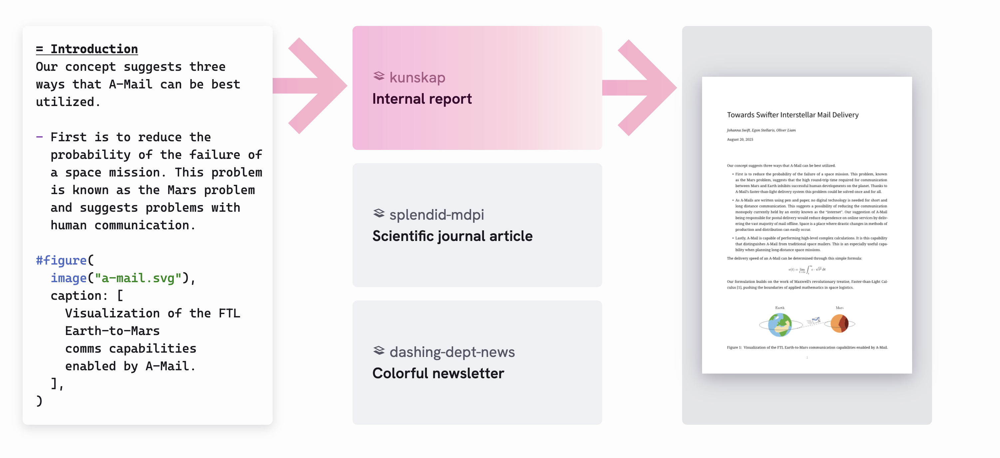
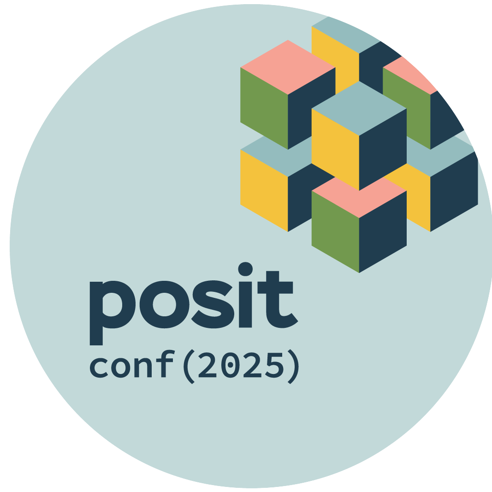

PDFs with Typst
Hello, Typst!


Learn more: Typst in Quarto
Hello, Typst!
To use Typst with Quarto, set the format in the YAML of your Quarto document:
Learn more: Typst in Quarto
Building PDFs
Page layout
Control the size of the page (papersize), the page margins (margin), and the number of columns used for page content (columns):
Learn more: Page Layout
Margins
Edit the margin’s horizontal direction (x) and vertical direction (y):
Can also use relative length:
Learn more: Margins
Paper Size
Learn more: Supported page sizes
Table of contents
Learn more: Table of Contents
Section numbering
Use number-depth:
Learn more: Section Numbering
Typst blocks
Add a .block class to change appearance of blocks:
Your turn
- In your document’s YAML header, change the format option from its current value (e.g.,
html) totypst. - Edit your YAML with one of the options we covered:
margin,papersize, etc. - Add a block to a section of the text.
Customizing templates
Custom Typst formats
Typst allows you to define your own templates to produce highly customized documents.


{kind=link}
{kind=link}
Learn more: Custom Typst Formats
Custom Typst formats
| Format | Usage |
|---|---|
| Poster | quarto use template quarto-ext/typst-templates/poster |
| IEEE | quarto use template quarto-ext/typst-templates/ieee |
| AMS | quarto use template quarto-ext/typst-templates/ams |
| Letter | quarto use template quarto-ext/typst-templates/letter |
| Fiction | quarto use template quarto-ext/typst-templates/fiction |
| Dept News | quarto use template quarto-ext/typst-templates/dept-news |
Learn more: Custom Typst Formats
Creating a new Typst format
Use the quarto create command to get started:
Choose typst as the base format and provide a name for the extension.
Creating a new Typst format
| File | Description |
|---|---|
_extension.yml |
Basic extension metadata (name, author, description, etc.) and format definition. |
README.md |
Documentation on how to install and use the format. |
template.qmd |
A starter document that demonstrates the basics of the format. |
typst-template.typ |
The core Typst template function (documentation on creating Typst templates can be found here: https://typst.app/docs/tutorial/making-a-template/). |
typst-show.typ |
File that calls the template’s function (mapping Pandoc metadata to function arguments). |
typst-show.typ
typst-show.typ
#show: dept-news.with(
$if(title)$
title: "$title$",
$endif$
$if(edition)$
edition: [$edition$],
$endif$
$if(hero-image)$
hero-image: (
path: "$hero-image.path$",
caption: [$hero-image.caption$]
),
$endif$
$if(dedication)$
dedication: [$dedication$],
$endif$
$if(publication-info)$
publication-info: [$publication-info$],
$endif$
)typst-template.typ
typst-template.typ
#let whr-template(
doc,
title: none,
author: none,
cover_image: none,
main_logo: none,
bottom_logos: none,
toc_background_image: none,
) = {
// Page setup for the entire document
set text(font: "Linux Libertine", size: 10pt)
set heading(numbering: "1.1")
set page(paper: "a4", margin: (left: 20mm, right: 30mm, top: 20mm, bottom: 20mm))
// Define the style for purple headings
show heading: it => {
set text(fill: rgb("#4B0082")) // A deep purple
it
}
// Define the blue bar on the right side of pages
#show page: page => {
// Add the blue bar (except on the cover page)
if counter(page).at(1) > 1 {
box(
width: 10pt,
height: 100%,
fill: rgb("#2a87d6"),
float: true,
inset: 0pt,
place(right, top)
)
}
// Render the page content
page
}
// Cover page layout
page(
header: none,
footer: none,
background: cover_image,
)[
#place(
right, center,
image(main_logo)
)
#if bottom_logos != none {
#place(bottom, center, [
#h(1fr) #bottom_logos #h(1fr)
])
}
]
// Table of Contents page
page(
header: none,
footer: none,
background: toc_background_image,
)[
#show: heading.where(level: 1, 2)
#outline(title: "Contents")
]
// Main content pages
#set page(columns: 2)
#set page(
header: if title != none {
box(width: 100%, [
#h(1fr) #text(9pt)[#title]
])
},
footer: box(
width: 100%,
[#h(1fr) #text(9pt)[#counter(page).at(1)]]
)
)
// Insert the main document content
#doc
}
// Apply the template to the document with the required parameters
#show: doc => whr-template(
doc,
title: [WORLD HAPPINESS REPORT 2024],
cover_image: "../assets/cover-page.jpg",
main_logo: "../assets/logo-center-right.png",
bottom_logos: [
#image("../assets/bottom-logo-1.png", height: 1.5cm)
#h(1cm)
#image("../assets/bottom-logo-2.png", height: 1.5cm)
#h(1cm)
#image("../assets/bottom-logo-3.png", height: 1.5cm)
],
toc_background_image: "../assets/toc-background.jpg",
)